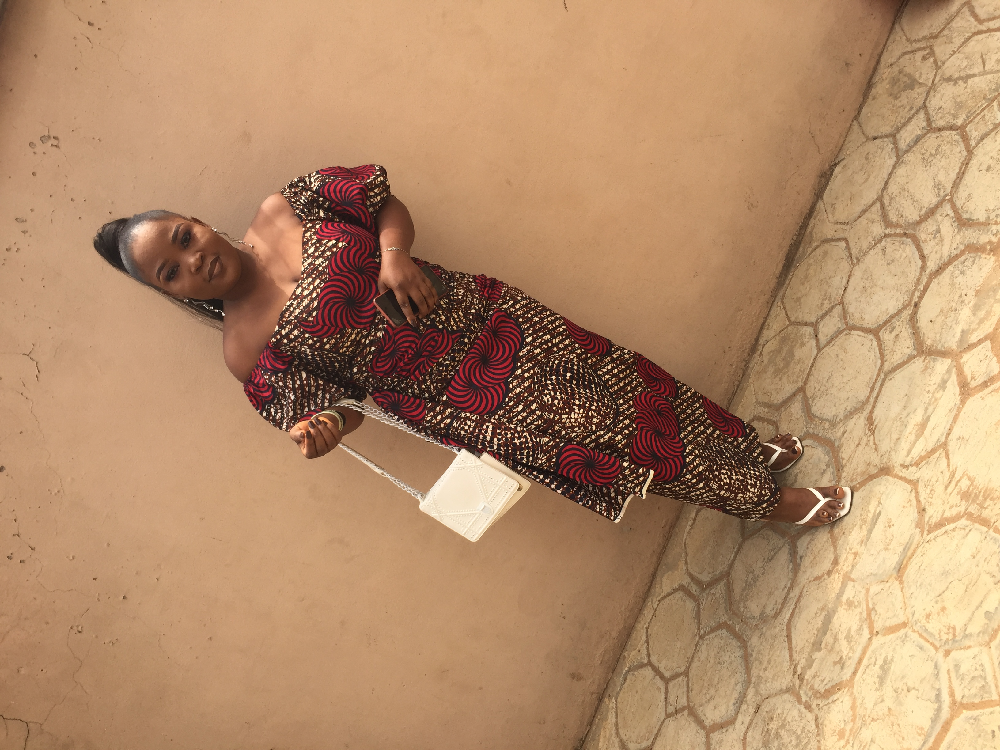

ADEMOLA JEMILAT TAIWO
05, Sadiku Erinfolami Street, Lekki, Lagos State. taiwoademola049@gmail.com | (+234)9022171219
About my Personal website
ADEMOLA JEMILAT TAIWO
OVERVIEW
I am an industrious and hardworking individual with high level of commitment, highly motivated, goal oriented and adequately skilled to
make impressive changes, outspoken with good human relation and ability to work excellently with other individual as a team. I am fully equipped for a fruitful and resourceful relevance in an organization that encourages growth; where teamwork is encouraged; where everyone is challenged to improve.
SKILLS&ABILITIES
Administrative: Coordinating group work/ project
Computer/IT/Software: Proficient in computer operations, concepts
And internet usage.
Others: Basic knowledge on Html and CSS.
- Computer Proficiency (Basic Microsoft Office Suits)
- Excellent oral and written communication skills
- Ability to work with team
- Ability to work with minimum supervision and under pressure
- motivated and result oriented.
OTHERS:
- Ability to work on a rotating shift
- Excellent communication and organizational skills
- Analytic and multitasking skills.
EXPERIENCE: ST’TIMOTHY COLLEGE.
ONIKE, YABA, LAGOS. Teaching Practice (Dec 2019-Mar 2020)
Responsibilities:
- Communicating Effectively
- Providing a safe and Secure learning Environment
- Researching and developing new learning method
AVIID AUTOS, LEKKI, LAGOS
Car sales Associate ( SEP 2022 – DEC 2022)
Responsibilities:
- Fielded calls from potential customers and followed up on inquiries
about vehicles specifications, price and availability
- Inspections
- Negotiated pricing and financing options.
- Connected with customers to meet and exceed their expectations.
EDUCATION: UNIVERSITY OF LAGOS, LAGOS STATE, NIGERIA.
Bachelor of Science in Education (Physics Education) (2016-2021)
HOMAT PIVOTAL COLLEGE, IKORODU, LAGOS STATE, NIGERIA.
West African Senior Certification Examination (WASSCE) (2012-2013)
RESEARCH EXPERIENCE:Undergraduate dissertation: ``An appraisal of Infrastructural facilities
and personnel for teaching Physics in senior secondary school’ October, 2021.
LANGUAGE PROFICIENCY: Proficient in English language and Yoruba language
INTERESTS: Fashion, music, vocational activities, meeting and interacting with people, and surfing the internet.
REFEREE: Available on Request.
Images with friends


